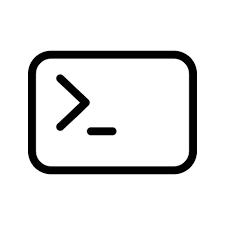
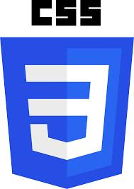
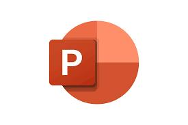

Skills
IT Support / Troubleshooting & Operations
Technical Support • Hardware & Software Troubleshooting • Remote Support Tools • POS Systems • Ticketing Systems (Familiar) • Documentation & Reporting • IT Asset Management • Inventory Management
Technical Support • Hardware & Software Troubleshooting • Remote Support Tools • POS Systems • Ticketing Systems (Familiar) • Documentation & Reporting • IT Asset Management • Inventory Management
Systems & Networking
Operating Systems (Windows, macOS) • Command Line • Active Directory • Basic Networking (IP, DNS, DHCP) • Cybersecurity Awareness
Operating Systems (Windows, macOS) • Command Line • Active Directory • Basic Networking (IP, DNS, DHCP) • Cybersecurity Awareness
Programming & Tools
Python • HTML • SQL • Microsoft Excel • Google Workspace • SaaS Configuration and Management
Python • HTML • SQL • Microsoft Excel • Google Workspace • SaaS Configuration and Management
Professional Skills
Customer Service • Time Management • Leadership • Operations Management • Payroll Processing
Customer Service • Time Management • Leadership • Operations Management • Payroll Processing